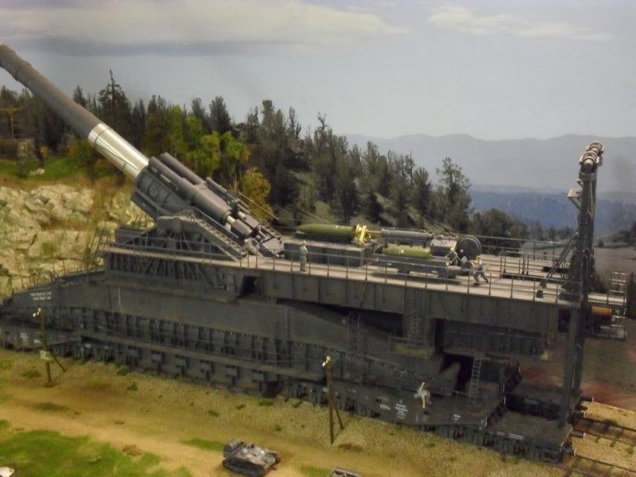

Танки
Готовий? Тоді поїхали до світу війн та необмежених бажань перемог!
Спочатку хотілось би обговорити один з найбільш шалених, але неосяжний план інженерної ідеї у світі.
Німеччина, часи другої Світової війни. Гітлер разом зі своїми інженерами замахуюються на шалений план танку. Він називається "Ратте" Зацікавивсь?Вам не здалося ця громила повинна була досягати 35 метрів вздовж корпуса,14 метрів завширшки та 11 метрів заввишки. Товщина гармати дорівнювала 30 см!
Для порівняння наша Радянська громила "КВ-2" мав гармату завширшки лише 15 см, тобто вдвоє менше за гаубицю німецького танку "Ратте". Він без зусиль міг би
пробивати броню найважчих танків світу.
На щястя для всіх нас цей гігант залишивсь у мріях нацистів, адже був зроблений лише макет непереможного чорного демона!
Тепер розглянемо вже існуюючий танк, але який не зміг затвердитись на віки у військовій справі. Цей танк дивував своїми бойовими досягненнями, але не дового. Це була "Дора". 
Знову фашистські мрії та надії. За кресення гіганта взялися у кінці 1930 року, коли треба було прорватися через лінію оборони "Мажино".
Та вперше постріли з цієї машини смерті пролунали 1942 року при штурмі Севастополя.
А тепре увага:
Вражають показники? Звичайно. Уявіть лише який удар приходивсь на місце падіння снаряду. Та через деякий час Дора просто вибухнула, а війська СРСР забрали гармату на дослідження.
Йдемо далі. Центуріон, A41 (англ. Centurion, A41) — британський середній танк другої половини 1940-х років.
За західною класифікацією відноситься до основних бойових танків першого покоління. Розроблений в 1943–1944 роках
для протистояння німецьким важким танкам в рамках концепції «універсального танка», який повинен був замінити собою
існуючі раніше піхотні та крейсерські танки. Перші серійні «Центуріони» надійшли у війська в 1945 році, вже після
закінчення бойових дій в Європі. Неодноразово модернізуючись, «Центуріон» перебував у серійному виробництві з 1945
по 1962 рік. Всього було випущено 4423 танка цього типу, не рахуючи машин на його базі.